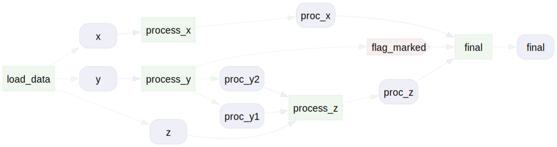
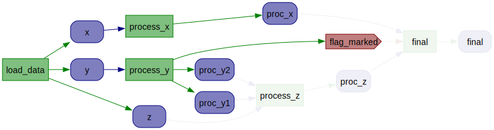

Quick Start#
yaflux helps you manage complex analytical workflows in Python.
It provides a structured approach to tracking transformations, ensuring reproducibility, and maintaining clear provenance.
This quick start guide will show you how to define and run an analysis using yaflux.
Defining an Analysis#
Analyses in yaflux are defined as classes that inherit from Base.
The key components of an analysis are the individual steps that make up the workflow.
These steps are defined as methods within the analysis class and are decorated with step.
The step decorator allows you to specify the inputs and outputs of each step, as well as any dependencies between steps.
Example Analysis#
Here’s an example of an analysis class with three steps:
import yaflux as yf
class MyAnalysis(yf.Base):
"""An example analysis class."""
# Define analysis steps
@yf.step(creates="raw_data")
def workflow_step_a(self) -> list[int]:
return [i for i in range(10)]
# Specify dependencies between steps
@yf.step(creates="processed_data", requires="raw_data")
def workflow_step_b(self) -> list[int]:
return [i * 2 for i in self.results.raw_data]
# Combine results from previous steps
@yf.step(creates="final_data", requires=["raw_data", "processed_data"])
def workflow_step_c(self) -> list[int]:
return [i + j for i in self.results.raw_data for j in self.results.processed_data]
# Define and run an analysis
analysis = MyAnalysis()
analysis.execute()
# Access results
final = analysis.results.final_data
Step Decorator#
The step decorator is used to define the individual steps of the analysis workflow.
It will automatically handle adding the results of the decorated method to the analysis object so you can focus on functional implementations.
Dependencies#
It takes the following arguments:
creates: The name of the result(s) created by the step (if any)requires: The name(s) of the result(s) required by the step (if any)mutates: The names(s) of the result(s) that are mutated by the step (if any)
The creates and requires arguments allow you to specify the inputs and outputs of each step.
The mutates argument allows you to specify which results are mutated in place by the step.
The decorated method should return the result(s) of the step.
Note: The mutates argument implies a requires dependency. If a step mutates a result, it implicitly requires that result. If you include a variable in the mutates you do not need to include it in the requires.
Mutability#
Note that in the above example no step mutates the analysis object.
The step decorator ensures that the results of each step are properly stored and tracked by the analysis object.
This is an attempt to limit the potential for side effects and to make the analysis more reproducible.
There are cases however where you may need to mutate the internal state of specific results for efficiency reasons.
In these cases you can use the mutates argument to specify which results are mutated in place.
import yaflux as yf
class MyAnalysis(yf.Base):
@yf.step(creates="raw_data")
def workflow_step_a(self) -> list[int]:
return [i for i in range(10)]
# Mutating the raw_data in place
@yf.step(mutates="raw_data", creates="_mutated_data")
def workflow_step_b(self) -> list[int]:
for idx in range(len(self.results.raw_data)):
self.results.raw_data[idx] = self.results.raw_data[idx] * 2
@yf.step(creates="final_data", requires=["raw_data", "_mutated_data"])
def workflow_step_c(self) -> int:
return sum(self.results.raw_data)
analysis = MyAnalysis()
analysis.execute()
assert analysis.results.final_data == 90
An important thing to note is that direct mutations break the implicit DAG structure of the analysis.
The way that yaflux reinforces the DAG structure of the analysis is by not allowing steps at the same topological level to have any overlap between mutated and required depdendencies.
Take the following example:
import yaflux as yf
class MyAnalysis(yf.Base):
@yf.step(creates="raw_data")
def workflow_step_a(self) -> int:
return 10
@yf.step(mutates="raw_data")
def workflow_step_b(self):
self.results.raw_data = 20
@yf.step(mutates="raw_data")
def workflow_step_c(self):
self.results.raw_data = 30
@yf.step(creates="final_data", requires="raw_data")
def workflow_step_d(self) -> int:
return self.results.raw_data + 10
try:
MyAnalysis()
except yf.MutabilityConflictError as e:
print(e)
Because workflow_step_b and workflow_step_c both mutate raw_data and workflow_step_d requires raw_data this will raise a MutabilityConflictError.
The problem is that the final_data will change depending on the order of execution of workflow_step_b and workflow_step_c.
This is a problem because yaflux assumes that the order of execution of steps at the same topological level does not matter.
To fix this problem you can use flags to signify that a step has been run.
Flag Setting#
Sometimes theres no getting around mutating the internal state of the analysis object.
This might be because an operation may be significantly more efficient if it can be done in place.
However, you might still need to signify that a step has been run.
In this case you can use the flag syntax in the creates or requires arguments to signify that a step has been run.
Flags are set and required with a leading underscore.
import yaflux as yf
class MyAnalysis(yf.Base):
@yf.step(creates="raw_data")
def workflow_step_a(self) -> list[int]:
return [i for i in range(10)]
# Flag setting is specified with a leading underscore
@yf.step(creates="_mut_data", mutates="raw_data")
def workflow_step_b(self) -> list[int]:
for idx in range(len(self.results.raw_data)):
if idx % 2 == 0:
self.results.raw_data[idx] = 100 # mutate the raw_data
# Flag requirements are specified with a leading underscore
@yf.step(creates="final_data", requires=["raw_data", "_mut_data"])
def workflow_step_c(self) -> list[int]:
return [i * 2 for i in self.results.raw_data]
analysis = MyAnalysis()
analysis.execute()
Note that the results are not reassigned but mutated in place.
yaflux will still not allow you to reassign the results of a step, but it will allow you to mutate them in place.
import yaflux as yf
class MyAnalysis(yf.Base):
@yf.step(creates="raw_data")
def workflow_step_a(self) -> list[int]:
return [i for i in range(10)]
# Flag setting is specified with a leading underscore
@yf.step(creates="_mut_data", requires="raw_data")
def workflow_step_b(self) -> list[int]:
self.results.raw_data = [i * 2 for i in self.results.raw_data] # will fail
# Flag requirements are specified with a leading underscore
@yf.step(creates="final_data", requires=["raw_data", "_mut_data"])
def workflow_step_c(self) -> list[int]:
return [i * 2 for i in self.results.raw_data]
analysis = MyAnalysis()
analysis.workflow_step_a()
analysis.workflow_step_b() # will fail
Lets look at an example where we use flags to disambiguate the order of execution of steps:
import yaflux as yf
class MyAnalysis(yf.Base):
@yf.step(creates="raw_data")
def workflow_step_a(self) -> int:
return 10
@yf.step(mutates="raw_data", creates="_flag_b")
def workflow_step_b(self):
self.results.raw_data = 20
@yf.step(mutates="raw_data", creates="_flag_c", requires="_flag_b")
def workflow_step_c(self):
self.results.raw_data = 30
@yf.step(creates="final_data", requires=["raw_data", "_flag_b", "_flag_c"])
def workflow_step_d(self) -> int:
return self.results.raw_data + 10
analysis = MyAnalysis()
analysis.execute()
Executing an Analysis#
The benefit of using yaflux is that it automatically:
Tracks dependencies between steps
Ensures that each step is only run once
Provides a clear record of which steps have been completed
This keeps your analysis organized and reproducible. It also keeps you from inadvertently running the same step multiple times or running steps out of order.
Runtime Inference#
When you run an analysis, yaflux will automatically infer the correct order of execution based on the dependencies you’ve specified.
analysis = MyAnalysis()
analysis.execute()
You can also run up to a specific step:
analysis = MyAnalysis()
analysis.execute(target_step="workflow_step_b")
Redundant Execution#
yaflux will by default skip redundant execution of steps.
The step method includes a force parameter that allows you to force the step to run again.
analysis = MyAnalysis()
# Run the first step
analysis.workflow_step_a()
# Try to run the first step again (skips execution)
analysis.workflow_step_a()
# Force the first step to run again
analysis.workflow_step_a(force=True)
# Panic on redundant execution (raises an error)
analysis.workflow_step_a(panic_on_existing=True)
Dependency Tracking#
yaflux automatically tracks dependencies between steps.
This means that you can define the order of your analysis steps however you’d like.
yaflux will ensure that each step is only runnable once its dependencies have been met.
# Run the first step
analysis = MyAnalysis()
analysis.workflow_step_a()
# Try an invalid step (raises an error)
analysis.workflow_step_c()
# Run the second step
analysis.workflow_step_b()
# Run the third step (works because the second step has been run)
analysis.workflow_step_c()
Saving and Loading Analysis States#
One of the advantages of yaflux is the ability to save and load analysis states.
This allows you to easily share and reproduce analyses without having to rerun the entire workflow.
Saving#
We can easily save the analysis state to a file:
# We can save the analysis state to a file
analysis.save("analysis.yax")
Loading#
Loading with Original Class Definition#
If you have access to the original class definition, you can load the analysis state as follows:
import yaflux as yf
# We can load the analysis state from a file
analysis = MyAnalysis.load("analysis.yax")
# Or load the analysis using the built-in load function
analysis = yf.load("analysis.yax")
# Access results
results = analysis.results.final_data
# View metadata
print(analysis.available_steps)
print(analysis.completed_steps)
# Rerun analysis from a specific step
analysis.workflow_step_b()
Loading without Original Class Definition#
A challenge with custom analysis classes is that some end users may not have access to the original class definition.
yaflux provides a solution for this by allowing you to save and load analysis states without the original class definition.
Here’s how you can load an analysis without the original class definition:
# Load the analysis state without the original class definition
loaded_analysis = yf.load("analysis.yax")
Selective Loading#
Sometimes analysis states can be very large and for downstream analyses or visualizations you may only need a subset of the results. This is also useful when you only want to see what an analysis structure looks like without running it or needing to load the entire state.
yaflux provides 4 ways to laod analysis states with selective loading:
# Load the full analysis
analysis = yf.load("analysis.yax")
# Load the analysis without any results
analysis = yf.load("analysis.yax", no_results=True)
# Load the analysis with a selected subset of the results
analysis = yf.load("analysis.yax", select=["raw_data", "processed_data"])
# Load the analysis but exclude a subset of the results
analysis = yf.load("analysis.yax", exclude="final_data")
Visualizing Analysis Steps#
A useful feature of yaflux is the ability to visualize the analysis steps.
You can generate a graph of the analysis workflow using the visualize_dependencies method:
Let’s first define a complex analysis with multiple steps and dependencies:
import yaflux as yf
class MyAnalysis(yf.Base):
@yf.step(creates=["x", "y", "z"])
def load_data(self) -> tuple[int, int, int]:
return 1, 2, 3
@yf.step(creates="proc_x", requires="x")
def process_x(self) -> int:
return self.results.x + 1
@yf.step(creates=["proc_y1", "proc_y2", "_marked"], requires="y")
def process_y(self) -> tuple[int, int]:
return (
self.results.y + 1,
self.results.y + 2,
)
@yf.step(creates="proc_z", requires=["proc_y1", "proc_y2", "z"])
def process_z(self) -> int:
return self.results.proc_y1 + self.results.proc_y2 + self.results.z
@yf.step(creates="final", requires=["proc_x", "proc_z", "_marked"])
def final(self) -> int:
return self.results.proc_x + self.results.proc_z
You can then visualize the dependencies between the analysis steps:
analysis = MyAnalysis()
analysis.visualize_dependencies()
This will create a graph of the analysis steps and their dependencies, which can help you understand the workflow structure. 
As we run analysis steps this workflow will update to reflect the current state of the analysis.
analysis.load_data()
analysis.process_x()
analysis.process_y()
analysis.visualize_dependencies()

This can be useful for understanding complex workflows and ensuring that all dependencies are correctly specified.